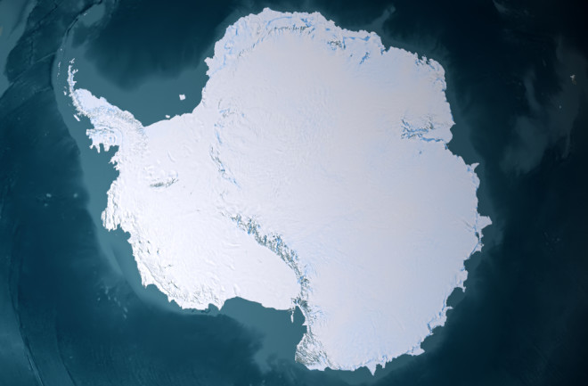

1967-1985
The roots of nuclear power in India lie in the early acquisition of nuclear reactor technology from several western countries, particularly the American support for the Tarapur Atomic Power Station and Canada's CANDU reactors.
Stanley Wolpert (2008) describes the measures taken by the Indian government to increase agricultural output:

The Indian space program received only financial support from the Soviet Union, which helped the Indian Space Research Organisation achieve aims such as establishing the Thumba Equatorial Rocket Launching Station, launching remote sensing satellites, developing India's first satellite—Aryabhatta, and sending astronauts into space. India sustained its nuclear program during the aftermath of Operation Smiling Buddha, the country's first nuclear tests.
The Ministry of Steel and Mines drafted a policy statement to evolve a new model for managing industry. The policy statement was presented to the Parliament on 2 December 1972. On this basis, the concept of creating a holding company to manage inputs and outputs under one umbrella was mooted. This led to the formation of Steel Authority of India Ltd. The company, incorporated on 24 January 1973 with an authorized capital of Rs. 2000 crore, was made responsible for managing five integrated steel plants at Bhilai, Bokaro, Durgapur, Rourkela and Burnpur, the Alloy Steel Plant and the Salem Steel Plant. In 1978 SAIL was restructured as an operating company.
In 1981, the Indian Antarctic Programme was started when the first Indian expedition was flagged off for Antarctica from Goa. More missions were subsequently sent each year to India's base Dakshin Gangotri.